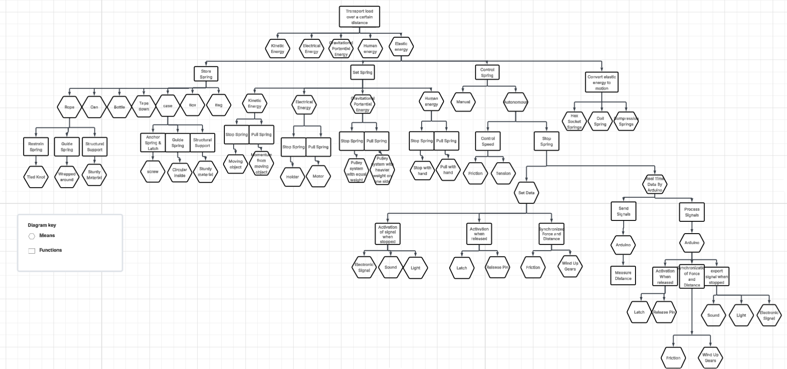
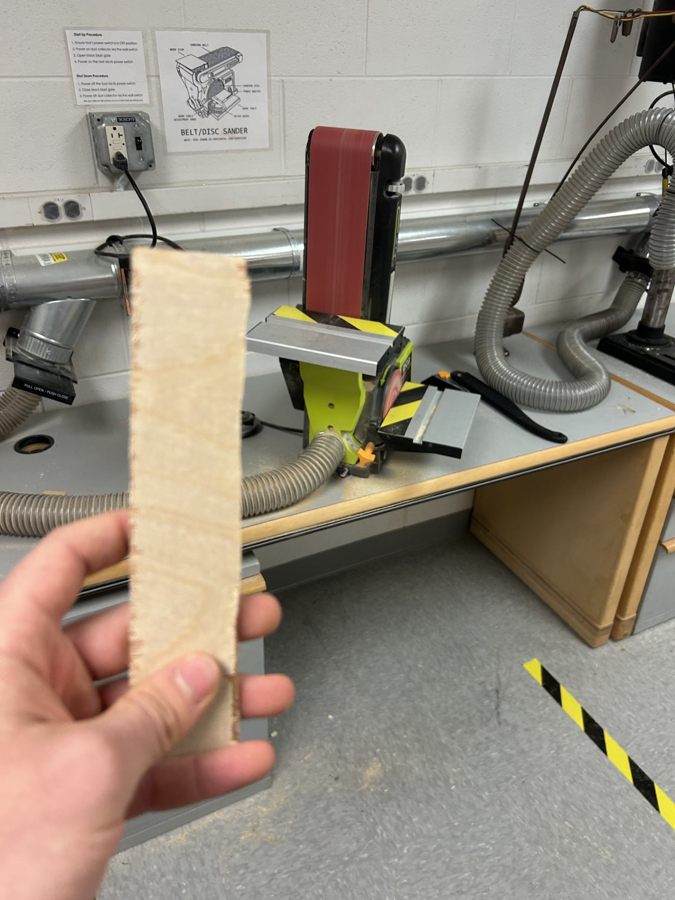
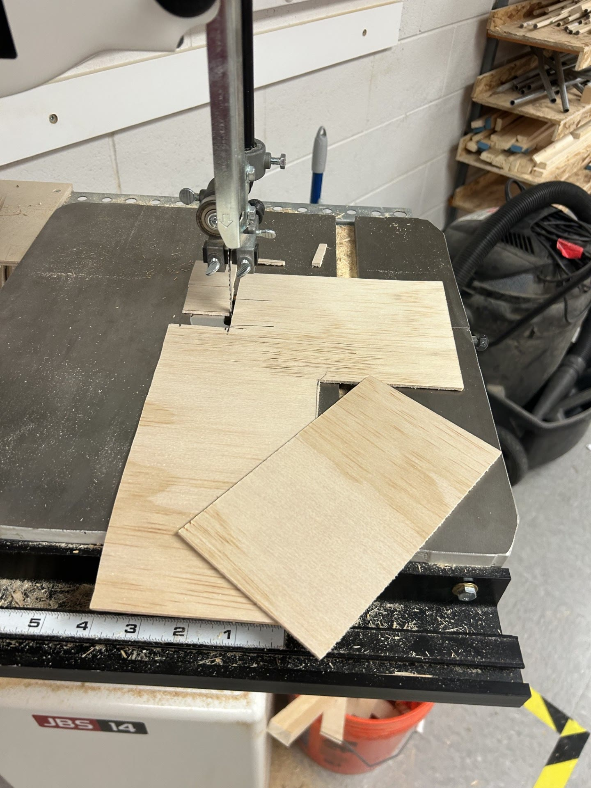
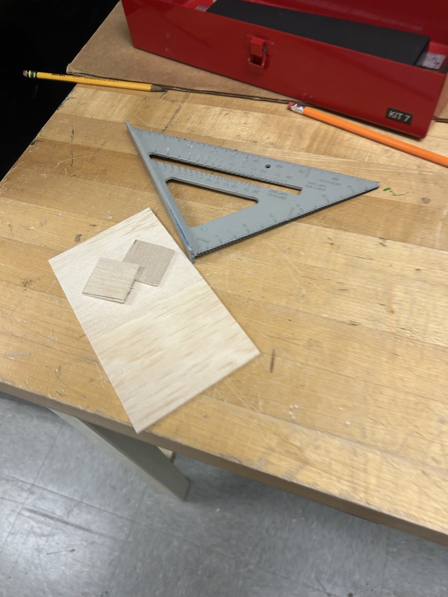
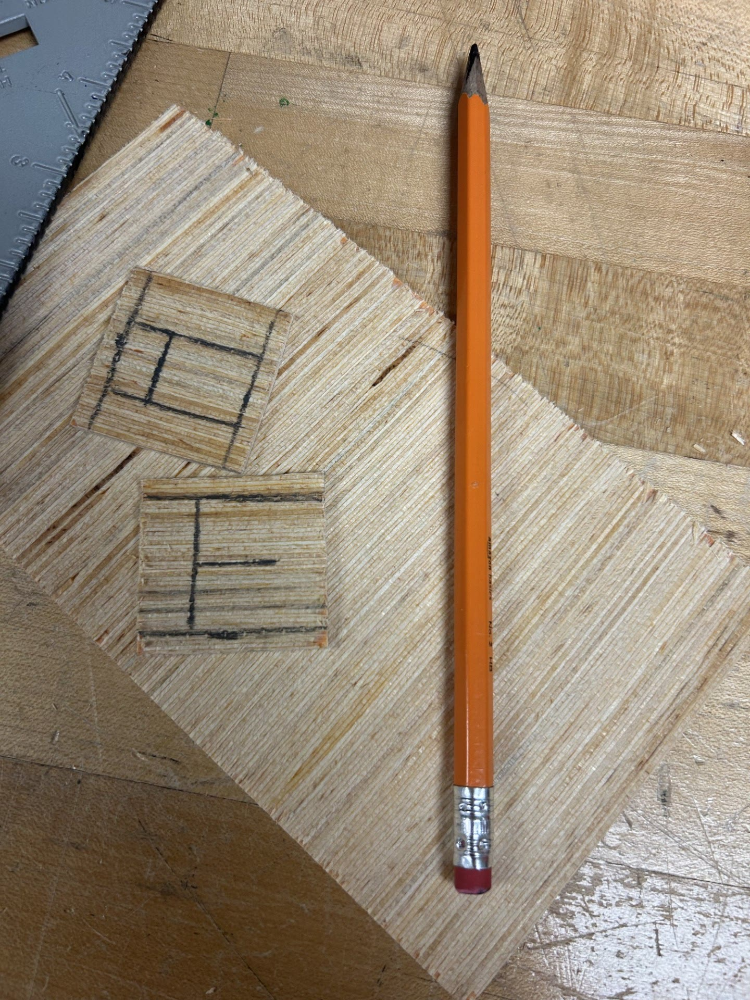
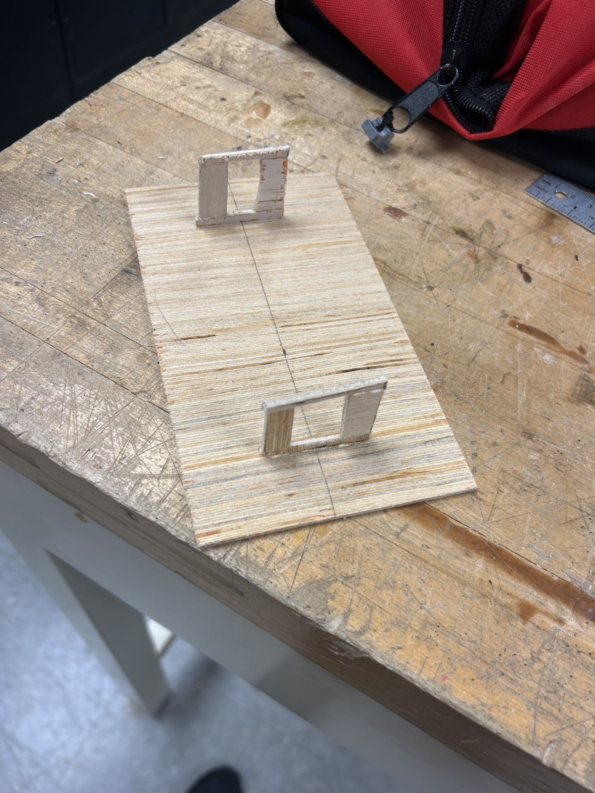
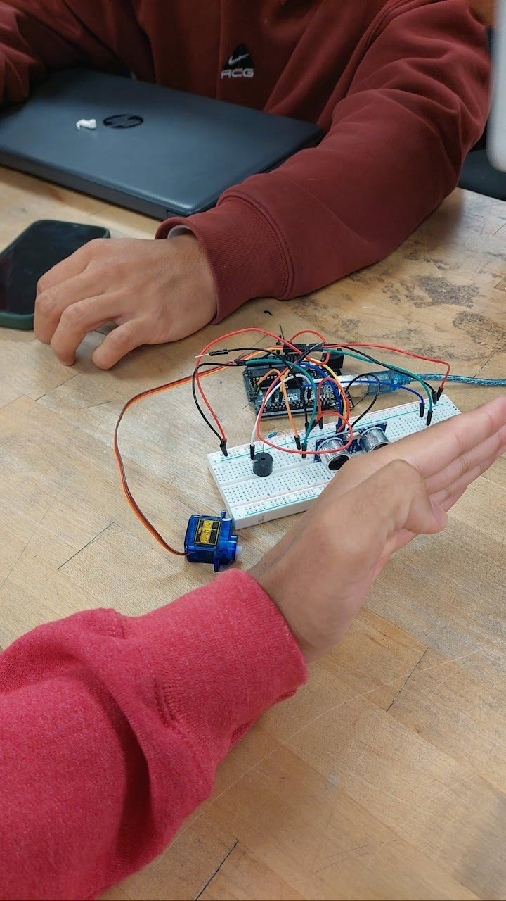
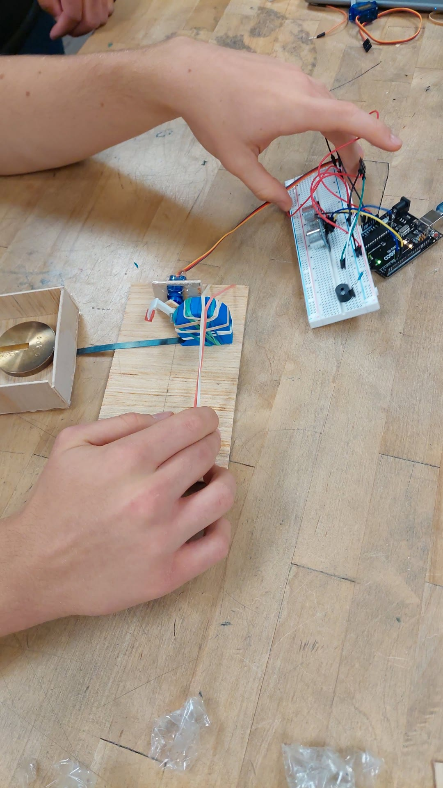
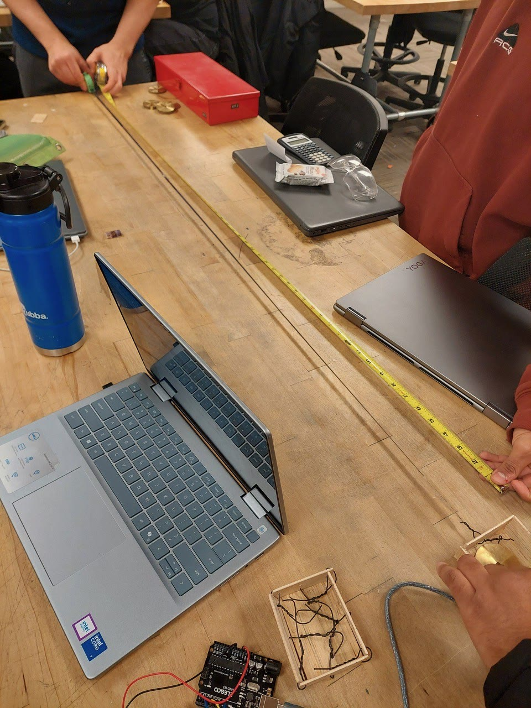

≥100 gRequirement / free-standing payload
Team sled must carry at least 100 g while remaining free-standing.
A four-person team project for a no-wheel, spring-only sled designed to stop autonomously and signal completion. The work progressed from functional decomposition and CAD into workshop fabrication, breadboard electronics, and actuator integration; quantitative performance validation remains.
Team sled must carry at least 100 g while remaining free-standing.
One or more permitted coil/torsion spring elements provide spring-only propulsion.
Operate on the designated grounded track, stop without human intervention, then provide visual/audio completion signal.
The team used a functional decomposition and Best-of-Class comparison rather than jumping directly to a single mechanism.

Initial morphological space.
Constraint and practicality filters narrowed the field.
Best-of-Class result: locking beat tension/friction on cost effectiveness, responsiveness, and reliability; ultrasonic sensing beat photoresistor/PIR on consistency/reliability; LED was the simplest stop indication.

The ultrasonic sensor informs Arduino logic; a servo actuates the lock; LED indicates completion. This is designed evidence for the intended autonomous stop sequence, not measured behavior.
Best-of-Class scoring favored locking over tension/friction for cost effectiveness, responsiveness, and reliability.
The CAD evolution added two torsion springs and two servos for balance, with electronics centralized in the base.

The workshop sequence documents material preparation, structural fabrication, breadboard electronics, servo-lock integration, and the team establishing a physical test scale. It demonstrates build maturity—not stopping accuracy or payload performance.







